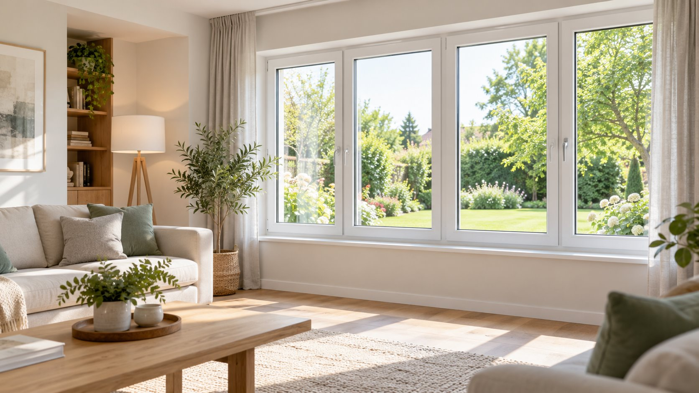
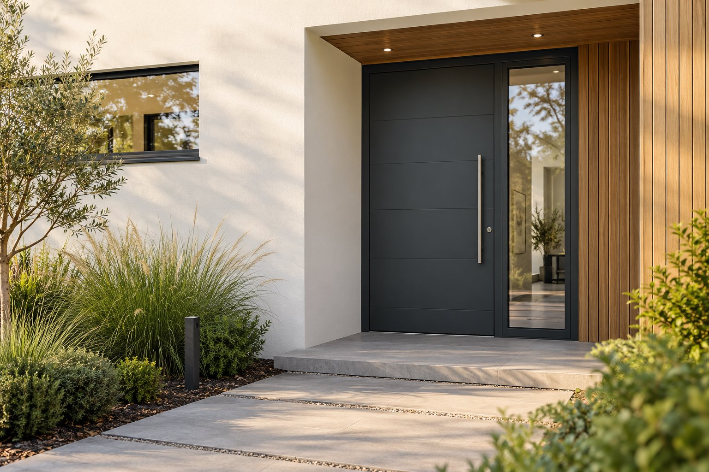

Galerie
Inspirație pentru următorul proiect.
În versiunea finală, imaginile demonstrative pot fi înlocuite cu lucrările reale ale echipei.

Casă contemporanăFerestre ample · imagine demonstrativă

Living luminosFerestre albe · imagine demonstrativă

Intrare în tonuri grafitUșă de acces · imagine demonstrativă

În timpul montajuluiEtapă de lucru · imagine demonstrativă
Portofoliu real